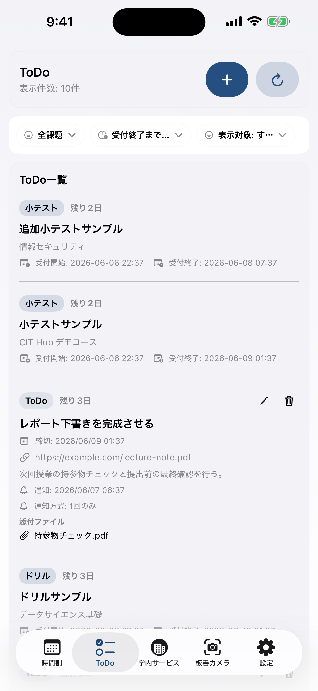
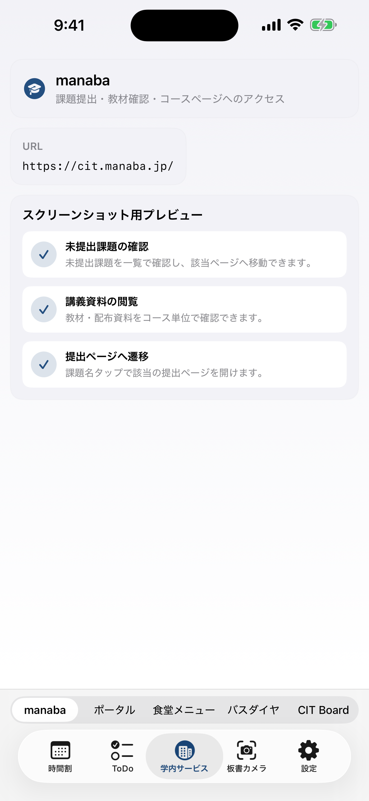

Features
最新機能
時間割タブ
前期・後期の時間割表示に対応。授業カードから板書や関連導線へ進めます。
ToDoタブ
manaba課題と個人ToDoを一緒に表示。追加・編集・通知設定・添付ファイル確認に対応します。
学内サービス
manaba、ポータル、食堂メニュー、バスダイヤ、CIT Board、カスタムURLを切り替えて使えます。
板書カメラ
無音カメラで板書を撮影し、授業ごとに保存・閲覧できます。授業カードから直接起動も可能です。
通知
課題通知、授業前通知、個人ToDo通知に対応。個人ToDoは 1回のみ と 毎週通知を選べます。
PDF / 添付確認
学内サービス内の PDF プレビューや、個人ToDo添付ファイルのアプリ内プレビューに対応します。
Screens
アプリ画面


Manual
全機能の取扱説明書
各タブの役割、ToDo の作成方法、通知の違い、学内サービスの使い方、板書カメラの流れを詳しくまとめた説明書ページを用意しています。
Download
CIT Hub を使う
iOS は App Store へ移動します。Android は最新配布情報である assets/version.json を参照して APK 配布先へ遷移します。